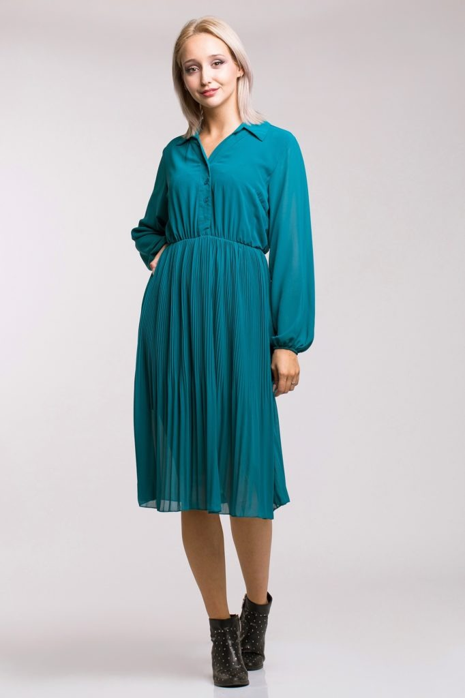
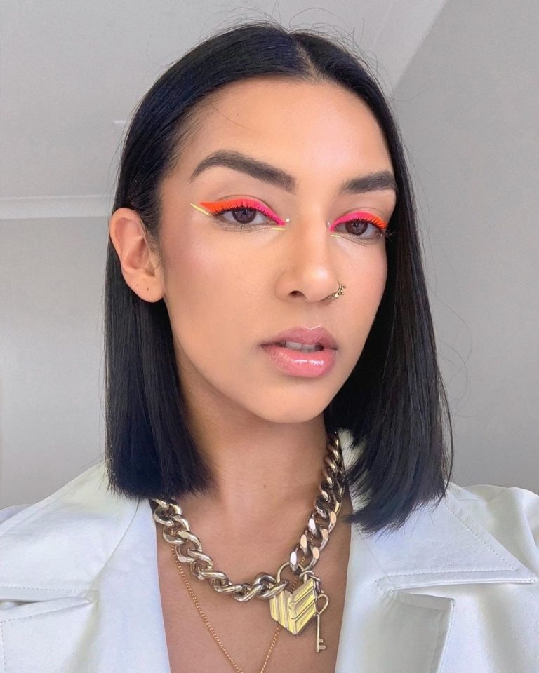
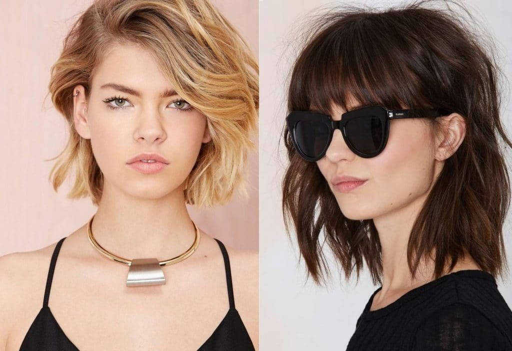

TENDINTELE DE MODA ALE ANULUI 2020
Indiferent dacă ești sau nu pasionată de modă sigur vrei, măcar din curiozitate, să știi ultimele trenduri
pentru anul care vine.
Anul 2020 va fi un an special și plin de semnificații, cu multă culoare, vesel și natural. În ciuda faptului că
va fi un an al contrastelor, simplitatea va fi la mare căutare în stilul urban, cât și în cel elegant sau
office, tocmai pentru că spune ceva foarte important despre stilul unei femei, care nu are nevoie de
nimic altceva pentru a fi în centrul atenției. Trendurile anului vor însemna transparenţe, culori
vibrante și mix între anii ’70 şi ’90.
În privința culorilor, predicțiile pentru moda 2020 sunt inspirate de mare și de ocean, ceea ce înseamnă
că nuanțele și tonurile de albastru și verde vor fi vedetele podiumului.
Pe lângă nuanțele anunțate ca fiind în mare vogă, există și alte culori câștigătoare:
Yellow Mellow – un galben matur inspirat din cromatica solurilor în timpul toamnei, Cantaloupe – o versiune mai fragedă,
mai blândă a portocaliului, Cassis – culoarea care fuzionează tonurile de roz și de mov, care au avut
un cuvânt de spus în moda ultimele sezoane, Neo-Mint – nuanța pastel moale, care simbolizează
optimismul și care îndeamnă la contemplație, Albastru pur – cea mai recentă etapă în evoluția
albastrului, de la culoarea de bază. Magenta este culoarea statement ce va pune în valoare bluzele
lejere sau tricourile confortabile în anul următor. Nu uita și de culorile clasice, mereu actuale,
precum negrul, albul și nuanțele nude.
Blana, pielea, pielea întoarsă și catifeaua, mai ales cea reiată, vor fi vedetele anului. De asemenea, se
mizează, în continuare pe imprimeuri. Nu vei da greș purtând carouri, dungi, ornamente etnice,
animal printuri ori pattern-uri florale.
Cele mai cool piese vestimentare pentru 2020
Rochia cu măneci bufante
Unul din articolele vestimentare care va face furori în anul 2020, este rochia cu mâneci bufante,
care poate fi purtată atât ziua, la birou sau ieșiri în oraș, cât și seara, la evenimente mai formale.
Dacă ești adepta unui stil elegant, rochiile bufante cu dantelă, perle sau aplicații florale ți se vor
potrivi de minune.

Body-ul
Una dintre piesele vestimentare la modă în 2020 este body-ul. Fie că este un body simplu cu
decolteu rotund, unul cu imprimeuri colorat sau în stilul anilor '80 cu decolteu statement, body-
urile vor fi piesele de bază pe care să le porți cu jeanși în 2020. Astfel, body-ul este una dintre
aceste tendințe ale anului 2020, care arată excelent și îți pune perfect talia în evidență.
Bineînțeles, reconfigurat, dar și asortat cu diverse alte piese vestimentare, cum este sacoul, body-ul
poate avea un impact foarte puternic asupra întregului look.
Cămașa albă reinterpretată
Albul strălucitor va fi un element de bază în vestimentația din 2020, de aceea cămașa albă se va
regăsi printre piesele în tendințe. Dar, nu oricum, ci reinterpretată, cu croieli și elemente decorative
speciale. Pentru stilul casual această opțiune modernă poate îți va transmite o impresie
de prospețime și ținută impecabilă.
Moda anilor 70-80
Ținutele în stilul anilor 1970 - 1980, cu bluze și rochii înflorate, umeri înalți, pantaloni scurți de
ciclism, materiale strălucitoare de tip disco, se întorc.
TENDINȚELE DE MAKE-UP ALE ANULUI 2020
Eyeliner-ul neon
Începem cu un clasic al secoului trecut, mai exact al anilor ‘60, și anume eyeliner-ul neon. Este într-
adevăr un make-up statement, așadar fie că optezi pentru un look subtil pe care vrei să îl revitalizezi
cu un strop de culoare, sau ești all about that bold make-up, eyeliner-ul neon îți va fi cel mai bun
prieten în 2020.

Rujurile în nuanțe îndrăznețe
Zilele rujurilor nude, ale machiajelor au-naturel s-au sfârșit. 2020 este despre look-uri bold și cât
mai fresh. Poți opta pentru un ruj chili red, cu un finish glossy și pentru un ten luminos, fără alte
intervenții.
Laminarea sprâncenelor
Sprâncenele dese rămân încă în topul tendințelor pentru sezoanele următoare, astfel încât tehnicile
pentru conferirea unui efect cât mai natural și, în același timp, armonios și îngrijit, se bucură de din
ce în ce mai multă popularitate. Laminarea presupune pigmentarea semi-permanentă a sprâncenelor, în
aceeași manieră asemenea microblanding-ului, însă fără intervenția acelor.
„Everything Glossy”
De la buze la ten, până la pleoape și clavicule, anul 2020 propune un nou standard de beauty. Tot ce
e mat, trebuie să fie înlocuit de produse pe bază de apă, uleiuri speciale sau pur și simplu, produse
glossy speciale pentru desăvârșirea unui asemenea look.
TUNSORI LA MODA PENTRU 2020
Anul acesta în vogă va fi bretonul care este nelipsit de pe podiumurile din întreaga lume. Bretonul
franjurat, bretonul filat, într-o parte, ondulat, sunt doar câteva opțiuni actuale în acest an.
Dacă decideți să faceți o schimbare, consultați mai întâi de toate un profesionist din domeniul
hairstyle-ului.
Femeile care au decis să-și schimbe look-ul, dar încă ezită, ar trebui să acorde atenție următoarelor
modele de tunsori: bob, carre, pixie.
Neglijență ușoară. Efectul unei dezordini ușoare este foarte popular și în acest sezon. Coafura este
foarte elegantă și crează o imagine lipsită de griji.
